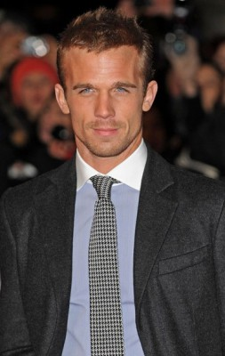
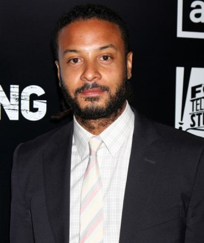

#7813 Dark Desires
Alternativ: Plush

 IMDB-Wertung: 5.4 / 10
IMDB-Wertung: 5.4 / 10  Metascore: 0
Metascore: 0 
Mourning the loss of her brother/collaborator, a young rocker struggles to write music while juggling a husband, two kids, and a mysterious new guitarist who will stop at nothing to become the most important person in her life.
Jahr: 2013
Dauer: 99 Minuten
FSK: 16
Land: USA Studio: Millennium EntertainmentTonspuren: DTS - ,
Untertitel: Deutsch,
Auflösung: 1080p (1920x1040) Größe: 6410 MB
Genre: Thriller, Drama, Musik
Regisseur: Catherine Hardwicke
Drehbuch: Catherine Hardwicke
Soundtrack: Nick Launay, Ming Vauz
Darsteller:
- Emily Browning als Hayley
- Xavier Samuel als Enzo
-  Cam Gigandet als Carter
- Dawn Olivieri als Annie
- Thomas Dekker als Jack
- Frances Fisher als Camila
 Elizabeth Peña als Dr. Lopez
Elizabeth Peña als Dr. Lopez-  Brandon Jay McLaren als Butch Hopkins / Writer
- Marlene Forte als Dr. Ortiz
- Kennedy Waite als Lila
- James Kyson als Coat & Tie Fan
- Indira G. Wilson als Limo Driver
- Casey LaBow als Evie
- Christopher Craven als Young Enzo (uncredited)
- Kimiko Gelman als Patagonia Wife (uncredited)
- Jesse Lewis IV als Sexy Guitar Guy (uncredited)
- Shaya McCord als Young Hayley (uncredited)
- Justin Sandler als Druggie Band Friend (uncredited)
- Kaitlin Thomas als Zandra (uncredited)
- Bradley James Metcalf als The Twins
- Jack Patrick Metcalf als The Twins
- Travis Scott Metcalf als The Twins
- Steven Asbury als Donnie / Drummer
- Caitlin Bray als Enzo's Sister (uncredited)
- Mark Jaxin als McDuff Sanders (uncredited)
- Jonny Ortiz als Fan (uncredited)
Datei: X:\2013(A-F)\Dark Desires (2013, FSK16, 1920x1040).mkv seit 20.12.2017
Festplatte: HD 2012(N-Z)-2013(A-H)
 Es gibt insgesamt 127 Filme in der Gruppe '2013(A-F)'
Es gibt insgesamt 127 Filme in der Gruppe '2013(A-F)'